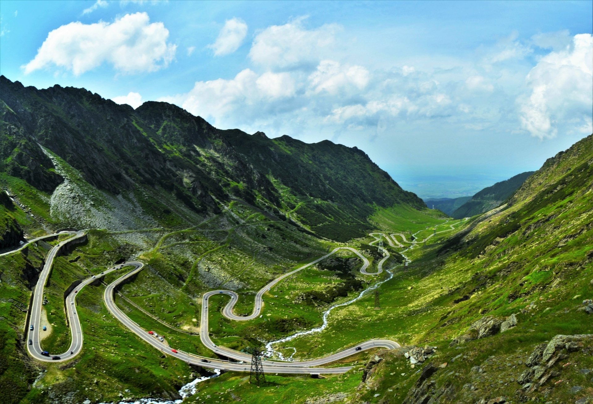

Destinatii turistice din Romania
Despre Romania
România este un stat situat în sud-estul Europei Centrale, pe cursul inferior al Dunării, la nord de peninsula Balcanică și la țărmul nord-vestic al Mării Negre. România este plasată geografic și în Europa de Est, Europa de Sud-Est respectiv parțial în Europa Centrală. Din punct de vedere geopolitic, România este un stat situat în Europa Centrală și de Est iar din punct de vedere cultural se încadrează parțial în conceptul de „Mitteleuropa” (i.e., Europa de mijloc sau Europa Centrală în limba germană) prin regiunile istorice Transilvania, Banat și Bucovina. Pe teritoriul ei este situată aproape toată suprafața Deltei Dunării și partea sudică și centrală a Munților Carpați. Se învecinează cu Bulgaria la sud, Serbia la sud-vest, Ungaria la nord-vest, Ucraina la nord și est și Republica Moldova la est, iar țărmul Mării Negre se găsește la sud-est.
Destinatii turistice:
1. Transalpina

Este unul dintre cele mai frumoase locuri din România deoarece Transalpina reprezintă cel mai înalt drum rutier din România, dar și din întregul lanț al Munților Carpați. Drumul are o lungime de 146 de kilometri și este situat la o altitudine de 2.145 de metri. Transalpina este un drum spectaculos, cu peisaje deosebite, care îți taie respirația.
- Mai multe informatii2. Transfăgărășan 
{kind=link}
Unul dintre cele mai frumoase obiective turistice, deoarece traseul Transfăgărășan îți pune la dispoziție pentru vizitat și lacul glaciar Bâlea, cascada Bâlea, lacul Vidraru și barajul Vidraru, dar și multe alte puncte turistice.
- Mai multe informatii
3. Cascada Bigăr

Cascada Bigăr este unul dintre cele mai frumoase obiective turistice din județul Caraș-Severin, din Parcul Național Cheile Nerei-Beușnița. În urma unui clasament făcut în 2013 de The World Geography, cascada Bigăr a obținut primul loc pentru cea mai frumoasă cascadă unică din lume.
- Mai multe informatii
4. Cetatea Alba Iulia

Unul dintre cele mai vizitate obiective turistice din România, acolo unde, înainte de a o vizita în totalitate, turiștii pot face un tur virtual la pas pe străzile Cetății Alba Iulia.
- Mai multe informatii